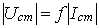

2. СНЯТИЕ ВАХ СТАБИЛИТРОНА
В данной работе в качестве нелинейного элемента используется полупроводниковый стабилитрон, предназначенный для стабилизации напряжения на нагрузке. Основными параметрами стабилитрона являются: напряжение стабилизации Ucm в рабочей области, номинальный Icm, минимальный Imin и максимальный Imах токи. Общий вид ВАХ стабилитрона представлен на рис. 12.1 (кривая 4).
Статическая ВАХ i(u) стабилитрона снимаются на постоянном токе (каждая точка даёт значение постоянного напряжения при соответствующем значении постоянного тока), а динамическая – при быстро изменяющемся напряжении (синусоидальном, линейно-нарастающем и др.). Динамическая ВАХ может отличаться от статической при достаточно быстрых изменениях тока, например, вследствие тепловой инерции и других причин.
Схема для снятия левой части ВАХ показана на рис 12.3 (управляемый контакт Space разомкнут). ЭДС Е источника постоянного напряжения, "балластное" сопротивление R1 (необходимое в цепи для ограничения тока через стабилитрон VD) и сопротивление нагрузки R2, рекомендуется найти по формулам:

Значения Ucm и Icm приведены в паспорте стабилитрона, находящегося в библиотеке программы EWB или программы МS8 Education. Для входа в библиотеку нужно:
- запустить программу EWB или программы МS8 Education;
- щёлкнуть мышью на панели диодов и "перетащить" на рабочий стол изображение стабилитрона;
- двойным щелчком мышью на изображении стабилитрона открыть окно его параметров: в окошке Library выбрать тип стабилитрона motor-in, соответствующий номеру N записи фамилии студента в учебном журнале группы, а в окошке Model нажать "клавишу" edit и выписать значения напряжения Ucm (Zener test voltage at IZU) и тока Icm (Zener test courent (IZT)).
Например, для стабилитрона типа 1N4734A (N = 12), Ucm = 5,624 B; Icm = 0,115 A. Тогда

Установить на амперметрах А1…А3 режим DС и сопротивление 1 мОм, на вольтметрах V1 и V2 – режим DC и сопротивление 1 МОм, управляемый контакт Space в разомкнутое положение.
Изменяя ЭДС Е источника питания от 0 до 2Ucm через (0,1…0,2)Ucm снимают показания вольтметра V2 и амперметра А2 и заносят их в табл. 12.1. При этом целесообразно увеличить число экспериментальных точек в зоне перегиба ВАХ. Используя данные табл. 12.1, строят ВАХ  стабилитрона (кривая 1, рис. 12.4).

Таблица 12.1
| Ucm, В | 0 | |||||||||||||||
| Icm, мА | 0 |
Проведя ВАХ  (EЭГ = Е; Rвт = R1) эквивалентного генератора (кривая 2, рис. 12.4) по двум точкам: Iк = EЭГ/R1 = 12/50 = 240 мА и Uх = EЭГ = 12 B, находят рабочую точку А (при Е = 12 В), определяющей на оси ординат ток I ( 125 мА цепи, а на оси абсцисс - напряжения
(EЭГ = Е; Rвт = R1) эквивалентного генератора (кривая 2, рис. 12.4) по двум точкам: Iк = EЭГ/R1 = 12/50 = 240 мА и Uх = EЭГ = 12 B, находят рабочую точку А (при Е = 12 В), определяющей на оси ординат ток I ( 125 мА цепи, а на оси абсцисс - напряжения
 на стабилитроне и U1
@ 6,4 B на резисторе R1.
на стабилитроне и U1
@ 6,4 B на резисторе R1.
Аналогично графическим методом можно приближённо определить рабочую точку, ток I цепи и напряжения на стабилитроне и на резисторе R1 при других значения ЭДС источника.